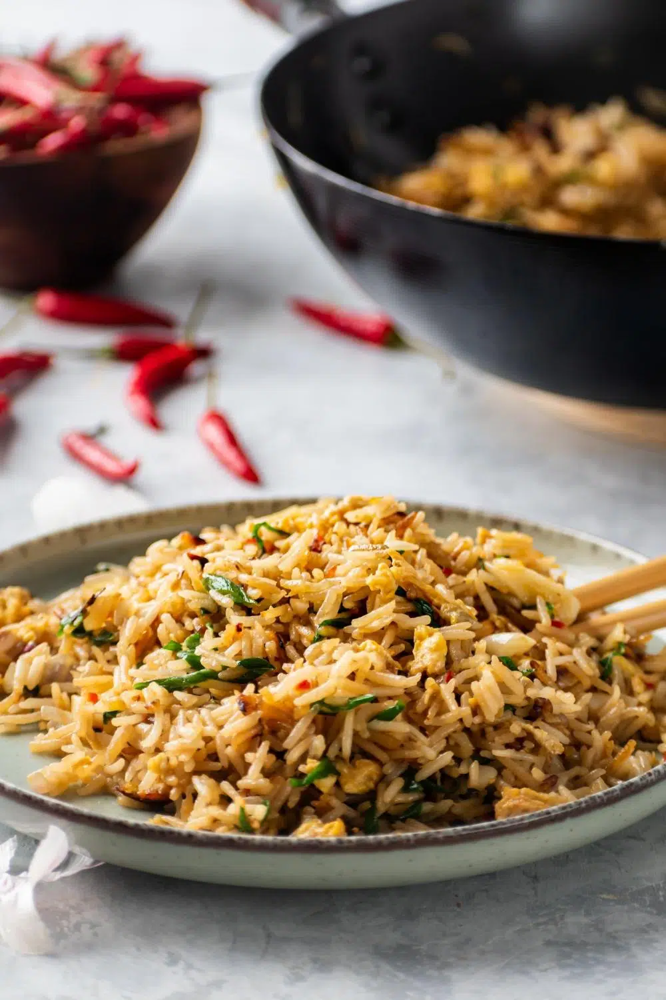

The Perfect Fried Rice Recipe

The best egg fried rice you will ever have,
courtesy of uncle Roger.
Ingredients
- 2 tbsp. Peanut Oil
- Garlic Cloves, smashed
- 1 Shallot, sliced from the middle
- 1 Egg +1 Egg Yolk
- 1 Spring Onion, sliced
- 1 Red Chili, sliced or chopped
- 4 Cups Day-Old Chicken Flavored Rice
- About 2 tbsp. Soy Sauce
- About 2 tbsp. Asian Sesame Oil
- About ½ tbsp. MSG (Monosodium Glutamate)
If you are going to the store to get ingredients, give this
steak recipe
a try. It is my favorite thing to pair with any fried rice dish.
Now gather your ingredients and let's start! Here are the steps:
- Mix rice with the egg and egg yolk in a bowl until every grain is coated.
- Coat a wok or pan with peanut oil and put it over medium heat.
- Once the oil starts smoking, add the garlic and shallot and fry them for 3 minutes.
- Add the rice mixture into the wok and mix well.
- Add the soy sauce and sesame oil and flatten it into the rice with the back of a spoon.
- Add the MSG, spring onion, and chilli and cook for another minute or so.
- Once the rice is dry-ish, plate it and serve it with whatever you desire! (Preferably some steak).
NUTRITION INFORMATION: SERVING SIZE: 1 Serving
Amount Per Serving:
Calories: 330 Total Far: 13g Saturated Fat: 0g Trans Fat 0g
Unsaturated Fat: 0g Cholesterol: 0mg Sodium: 0mg Carbohydrates: 42g
Fiber: 2g Sugar: 0g Protein: 10g